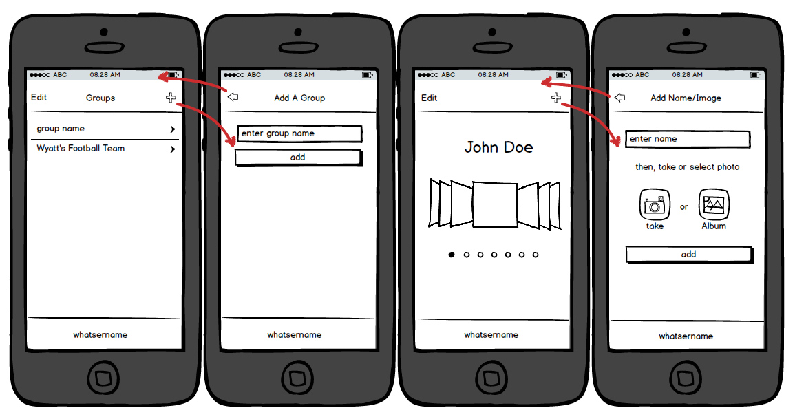

Introduction
What is this?
This is an opinionated guide for building websites, applications, and hybrid applications running on phones and tablets using Kendo UI mobile widgets and application tools. The intent is for the prescriptions found within this document to become a style used by developers when building Kendo UI mobile solutions.
Why use Kendo UI to build mobile apps?
Kendo UI provides JavaScript specific widgets to be used in the construction of phone and tablet web based interfaces. In addition to widgets, Kendo UI also provides mobile centric application logic for building a Single Page Application (aka SPA's) in a browser or webview (i.e. Application, View, Layout). While Kendo UI widgets can run stand alone without an active mobile application instance this guide assumes the use of the mobile application logic in conjunction with the mobile widgets.
Who should read this
You are front-end engineer who has experience developing applications in HTML, CSS, and JavaScript (e.g. SPA applications using MVVM) that wants to use these skills to build a mobile/tablet web site/application or a hybrid native application and are in need of some direction/opinions to get you started. It's likely you are familiar
whatsername application
This guide will express development opinions in the context of a real application called, "whatsername". The whatsername app captures names and headshots for the purpose of memorizing a group of people. I conjured up this application to help me memorize the names of each child on my son's football team. The applications functionality provides a UI to create a group, then enter a name and head shot for each person in the group. The point of the application is to create a sideshow of named photos for memorizing faces and names. Below I show the wireframe I drafted before coding the application.
The source code can be found on Github. You should familiarize yourself with the code (i.e. download, run it) before reading this guide.
Prerequisites
Some knowledge is imparted and some knowledge is assumed about the following:
- Single Page Applications - What is it?
- Kendo UI Mobile Widgets & Application Tools - learn it | Docs
- Declarative JavaScript - What is it? | Learn it
- MVVM/Data Binding (specifically Kendo UI MVVM) - What is it? | learn it | Docs
- Kendo UI Datasource - What is it? | Learn it | Docs
- Kendo UI Templates - What is it? | Learn it | Docs
- Command-line/Terminal - What is it? | Learn it
- NodeJS - What is it? | Learn it | Docs
- NPM - What is it? | Learn it | Docs
- Bower - What is it? | Learn it | Docs
- gulp.js - What is it? | Learn it | Docs
If you are not familiar with the above items I suggest you stop and take the time to become informed on each item mentioned above. The items in the list are ordered in logical learning order.
Get Kendo UI Mobile
Kendo UI mobile widgets and application tools are free and open source for anyone to use for anything. The code is part of the open sourced Kendo UI Core which is the foundation for Telerik's paid product, Kendo UI Professional.
You can download Kendo UI Core from the CDN, Bower, Github, or sign up for a Telerik account and download a 30 day trial of Kendo UI Professional (which contains the Kendo UI Core).
Getting Kendo UI core from the CDN
<!DOCTYPE html>
<html>
<head>
<meta http-equiv="X-UA-Compatible" content="IE=edge" />
<link href="http://cdn.kendostatic.com/2014.2.1008/styles/kendo.mobile.all.min.css" rel="stylesheet" />
</head>
<body>
<script src="https://code.jquery.com/jquery-2.1.1.min.js"></script>
<script src="http://cdn.kendostatic.com/2014.2.1008/js/kendo.ui.core.min.js"></script>
</body>
</html>
- The Kendo UI CDN is hosted on Amazon CloudFront.
- In order to use HTTPS, you need to directly access the CloudFront CDN, or use your own domain and SSL certificate.
- In production you should provide a fallback to CDN code.
- Minified files are not always ideal for development. And, only the
kendo.ui.code.min.jsfile is available on the CDN. To get the non-minified filebower installor pull the source from Github.
Getting Kendo UI core from Bower
Open a terminal/command line and run bower install kendo-ui to get the Kendo UI Core package downloaded using Bower.
Getting Kendo UI core from GitHub
Open a terminal/command line and run git clone https://github.com/telerik/kendo-ui-core.git to clone the Git repository or download zip from Github.
Getting Kendo UI Professional trial (contains Kendo UI Core)
Sign up for a Telerik account and get a 30 day fully-functional trial of Kendo UI Professional.
1. General Kendo UI Mobile App Guidelines
1.1 Take stock of technologies available on the web platform
A Kendo UI mobile app, even if it's running in a webview, is render by a browser engine (i.e. a webview is like a browser window tab). Make sure to take note of the HTML5 (aka JavaScript API's), CSS, and JavaScript standards that are support by the browser engine(s) that will be running you application.
It's likely the case that the browser engine you use to render a Kendo UI mobile application will be a newer, modern browser engine, that supports things like ES5, Flexbox, CORS, and Web Sockets.
Make sure you are aware of everything you have at your disposal for development and use it.
- Kendo UI mobile is supported on the following operating systems and browser combinations Android 2.3+, iOS 6+, Windows Phone 8+, Chrome for Android. Kendo UI mobile widgets used without the mobile application logic will run on OS X 10.5+ (IE10+, Chrome Recent, Opera 15+, Safari 5+) and Windows XP+ / Server 2003+ (IE10+, Chrome Recent, Opera 15+)
1.2 Use jQuery 2.x
Kendo UI mobile widgets are support on windows phone 8+ and on IE 10+. Both use the ie10 browser rendering engine so you might as well use the newest version of jQuery, which drops support for IE 8 and below.
1.3 Don't use Internet Explorer compatibility modes
Internet Explorer compatibility modes can exhibit different behavior and rendering bugs, compared to the browser versions they emulate. It is highly recommended to use IE's Edge mode via META tag or HTTP header. The meta tag in question shown below.
<meta http-equiv="X-UA-Compatible" content="IE=edge" />
1.4 Favor the platform neutral flat theme for all platforms
By default Kendo UI will use platform themes (e.g. first three devices below). However its better to force Kendo Mobile to use the kendo.mobile.flat.min.css for all platforms (e.g. far right device below).
To override Kendo UI's default nature of detecting the platform and forcing a platform specific CSS theme simply set the skin option to flat in the Application() method used to initialize the mobile application.
var app = new kendo.mobile.Application($(document.body), { skin: 'flat' });
The reasons to do this is:
- Mimicking the look and feel of a specific platform turns out to be a complicated proposition resulting in a UI that will likely fall short of native look and feel, function, and performance in most cases. It's better to have a custom UI than to have a UI that is always in second place to the real thing.
- Using the platform neutral theme results in a fast user experience because the CSS used to create the neutral theme is void of the complex CSS (i.e. Gradients etc...) required by the platform themes to replicate native UI's.
- Overwriting and evolving one theme is simpler than overwriting and evolving several platform specific themes.
1.5 Don't add mobile rendering meta elements
The meta elements below are automatically added to an html page when an application is instantiated.
<meta name="apple-mobile-web-app-capable" content="yes">
<meta name="apple-mobile-web-app-status-bar-style" content="black">
<meta name="msapplication-tap-highlight" content="no">
<meta content="initial-scale=1.0, maximum-scale=1.0, user-scalable=no" name="viewport">
Rely on this fact and don't add your own.
1.6 Build common sense code
The following are common rules, laws, and practices among seasoned application developers for building long lasting applications through consistency:
- Entire code based should follow the same style of coding as if a single developer (i.e. mind) crafted the code. This should be validated automatically at code time (i.e. in IDE on key stroke), build time, and commit time (e.g. GIT Hooks).
- When writing code be verbose, priorities readability (i.e. code is read much more often than it is written), comment everything, and dispense with DRY principles if it obscures developer clarity.
- The DNA of an application is small miniature applications/components, properly decoupled into single responsibility modules.
- Modules are separated by nature (i.e. behavior/controller, model/data, style, template/html, test etc..) but organized together (i.e. application structure) by feature.
- Avoid complexity that does not pay for itself.
- Don't optimize development code, optimize production code (i.e. don't pre-optimize)
- Document everything!
- Automate what you can using a task runner to build code. Don't rely on human tasking.
- Establish at least one layer (unit, integration, functional) of automated testing that runs during build or before accepting code commits (i.e. Use a githook to run tests, reject if tests fail).
- Automate the logging and notification of runtime errors for production code.
- Fear monolithic abstractions in the form of closed frameworks which promote one stop developer solutions.
1.7 Develop using real devices
Simulators and browsers running on a desktop or laptop provide a quick and easy way to run Kendo UI Mobile code. However, this should not be how you test your code alone. It's critical that during development, development code is tested on the devices it intended to run on. I recommend at the very least testing on:
- windows phone / windows mobile 8.0+
- Android phone / Android 4.0+
- iphone / iOS 6.0+
1.8 Make use of remote debugging tools
Plug a android (4.2+) or ios (iOS6) device into you computer/laptop and you can use the developer tools found in Safari or Chrome locally to debug the site running in the devices browser.
- The browser on a phone/tablet is representative of the engine (i.e. same engine) used in a webview and can be preemptively used to test hybrid applications.
1.9 Use theme builder to produce initial CSS overrides to flat theme
Telerik offers a mobile theme builder tool that can be used to generate CSS code that overrides the CSS found in the default themes.
Start with the kendo.mobile.flat.min.css and tweak the styles from here. Below I show a video of this being done for the whatsername app.
The theme builder can do a bit more than change the turquoise color found in the flat theme. However, if you all you want to do is replace the turquoise color with a new color you can use the CSS below. Simply change the color value and make sure the CSS is specified after the flat theme CSS.
.km-flat .km-switch-handle,
.km-flat .k-slider-selection,
.km-flat .km-switch-background {
color: #444;
}
.km-flat .km-rowinsert,
.km-flat .km-state-active,
.km-flat .km-scroller-pull,
.km-flat .km-loader:before,
.km-flat .k-slider-selection,
.km-flat .km-touch-scrollbar,
.km-flat .km-pages .km-current-page,
.km-flat .k-slider .k-draghandle,
.km-flat .k-slider .k-draghandle:hover,
.km-flat .km-tabstrip .km-state-active,
.km-flat .km-scroller-refresh.km-load-more,
.km-flat .km-popup .k-state-hover,
.km-flat .km-popup .k-state-focused,
.km-flat .km-popup .k-state-selected,
.km-flat .km-actionsheet > li > a:active,
.km-flat .km-actionsheet > li > a:hover,
.km-flat .km-actionsheet > li > .km-state-active,
.km-flat li.km-state-active .km-listview-link,
.km-flat li.km-state-active .km-listview-label,
.km-flat .km-listview-label input[type=radio]:checked,
.km-flat .km-listview-label input[type=checkbox]:checked {
background: #444;
}
.km-flat .km-filter-wrap > input:focus {
border-color: #444;
}
I used both the theme roller tool and the above CSS to produce overrides for the whatsername application.
1.10 Use the additional icons Kendo UI Provides
Kendo UI Mobile includes 38 integrated font icons that can be used in HTML by specifying a data-icon attribute with one of the following icon names.
Below I show of one of these icons defined in HTML.
<li><span data-role="button" data-icon="about"></span>about</li>
But don't limit yourself to this short list of icons. About 10 times more icons are actually shipped for use but are simply not setup in CSS to be used.
To set this up simply create the CSS and reference a unicode/icon:
.km-arrow-e:after,
.km-arrow-e:before
{
content: "\e000";
}
Then use this icon in your application like so:
<a href="/" data-icon="arrow-e">Home</a>
All Unicode's and associating icons are shown below:
1.11 Use normalize.css
When using the kendo.mobile.flat.min.css as a baseline theme with the intentions of customizing the theme further it can be beneficial to also include normalize.css.
The benefits of including normalize.css are:
- Preserve useful browser defaults rather than erasing them.
- Normalize styles for a wide range of HTML elements.
- Correct bugs and common browser inconsistencies.
- Improve usability with subtle improvements.
- If you are using a CSS framework check to make sure that the CSS framework is not already using normalize.css.
1.11 You might need a mobile first CSS framework
Kendo UI does not lock you into or prohibit the use of mobile first CSS frameworks to aid UI development. I've found that even the simplest of custom interfaces can benefit from the solutions found in a CSS framework (grids, form styles, form layouts etc...).
Some battle test mobile first CSS frameworks are:
If introducing another third-party dependency into the code is not something you prefer doing then just realize you'll more than likely have to create a miniature custom CSS framework for aiding the development of custom interfaces.
- I'm using bootstrap in the whatsername. If you use bootstrap, don't use the optional bootstrap theme. It contains some CSS that might cause performance issues.
If you attempt to adding the meta element through Javascript it will be ignored.
1.13 Managing the DOM Intelligently
Don't let the DOM get out of control. Manually manage the DOM intelligently.
2. whatsername Folder Structure
2.1 Application structure overview
The image belows details the folder structured used to create the whatsername application.
2.2 Bower & NPM setup
Node packages are stored in a directory called node_modules. This is the default directory name and location, used by NPM, in relation to the package.json file.
Bower is not being used in the default manner. The bower.json file is in the root of the application directory, which is common, but I am using the .bowerrc file to configure bower to store packages in the wwwDev directory in a folder called bower_components.
2.3 Src, wwwDev, wwwBuild directories
The application source can be found in the src directory. This will be where you edit code. The wwwDev directory and the wwwBuild directory will contain development and production versions of the code which get served to a web browser using gulp-webserver (more on that in the build and task section).
2.4 Shared directory
The src/shared directory will contain logically named and grouped modules which are either used globally to run the application or are used by more than one view module. Common files to find in the shared directory are global CSS modules, global layout modules, and utility modules to name a few.
2.5 UI directory
The ui directory will contain logically group and named UI portions of the application. It's not a hard and fast rule but think of the UI directory as the place you start dividing the application into a folder structure of features or logical sections of the application. Often the structure of this directory will mimic the architecture of the application from a navigation or tree map persecutive. This can often be a source of great confusion for developers because the structure of the folders depends greatly upon what you are building. For a Kendo UI mobile application it might be best to simply consider that each view has its own directory potentially containing a controller JavaScript file, an html file containing the view, an HTML file containing a view specific layout, a CSS file containing view specific styles, and a test. These directories form a tree/hierarchical structure based on the logical break up of the application.
How, exactly, to organize the ui directory is less important then the purpose in doing so. You want to create an application made up of small parts, grouped logically together, that have a clear separation of concerns. Every folder in the UI directory should represent a logical part (i.e. a region of logically relevant ui) of the application. Inside of the folder will be all of source code for that part only.
If this is difficult for you to envision, study the whatsername wireframe and the whatsername directory structure (specifically the ui directory) to get a feel for this style of organization.
3. whatsername Application Servers, Tasks, and Builds
3.1 What is gulp doing
The application uses the gulp build system to follow a build first development strategy. Basically, when developing, a build is occurring every time you make a change to the source. The, build on every source change strategy, facilitates an endless possibles of what can programmatically occur, often in an automated fashion during development. Of course, gulp is doing a lot more than just taking source code and building something.
3.1 The wwwDev Build process & Server
3.2 The wwwBuild Build process & Server
3.2 Git ignore
4. whatsername Application Architecture
4.1 index.html
There will be only one valid HTML file (i.e. doctype, header, etc..) in the entire application. It will be called index.html and it will reside in the src folder. Everything else will be consider a module that is included into index.html via a <script> or <link> element or the build process. Consider index.html the master configuration file for including all the necessary CSS, HTML, and JavaScript to make the application run.